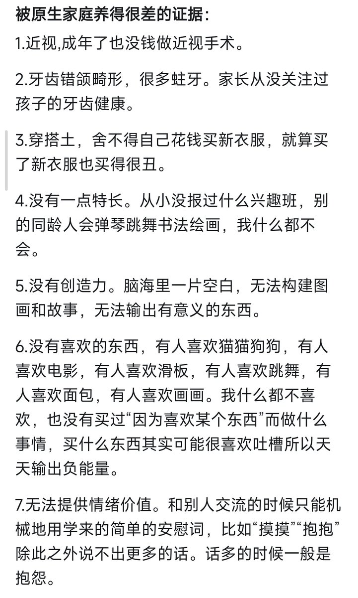
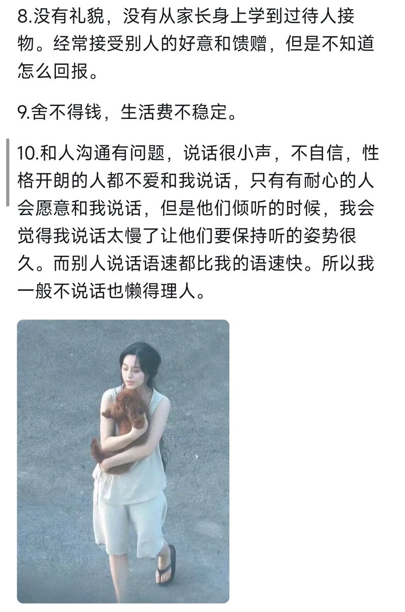

孙悟元
@wuyuandev
我发现我只有一半符合，包括1,3,7,9，但其他的方面我似乎并不符合，我喜欢编程，这也算特长，除了吃舍曲林那段时间外，我脑子里想象力一直很好，和熟人（能让我放心的人，哪怕不小心说错话了也难以伤害到对方那种）沟通也能流畅、快速和自信。
但和其他xyn的时候我就不太会说什么话了，我和很多人差别都很大，历经的完全不一样。我不会安慰人，准确来说是不敢去努力共情，我自己都会先陷进去，所以很多时候只落得沉默。
不过你要是看我在学校和同学吹水，那可是完全不一样的，这又算什么情况捏？


Anle
@Anle1165909
被原生家庭养的很差的证据 https://t.co/O8fwTTcGe7